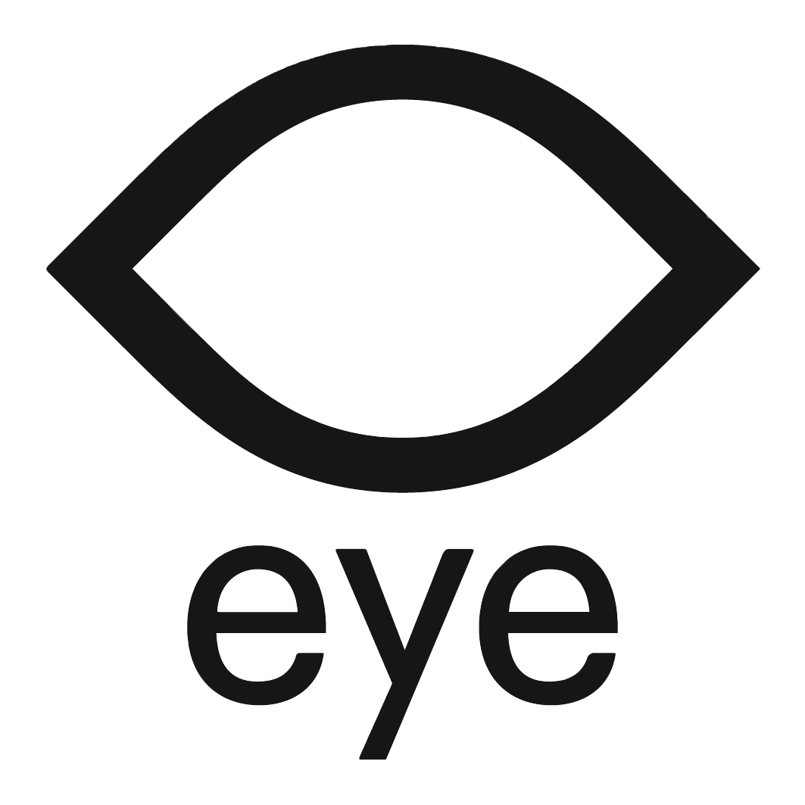
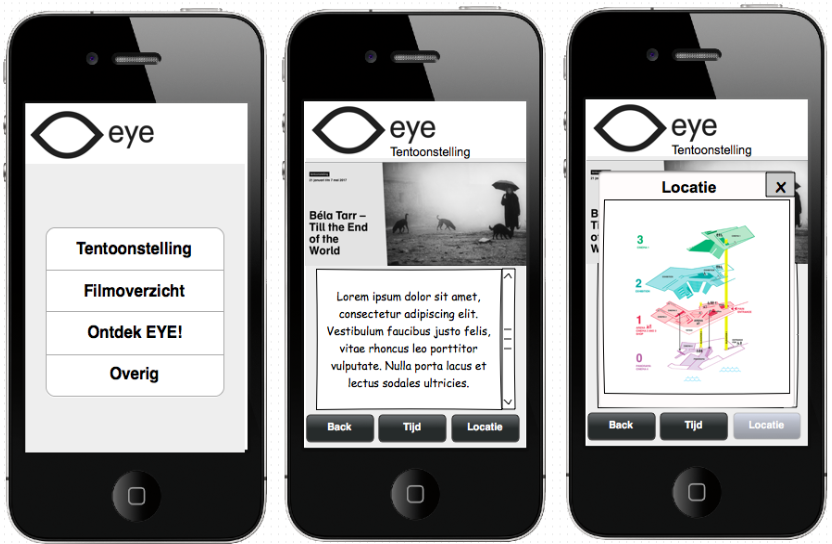
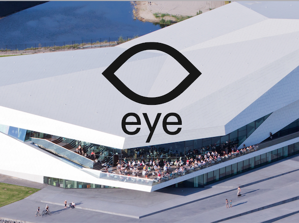
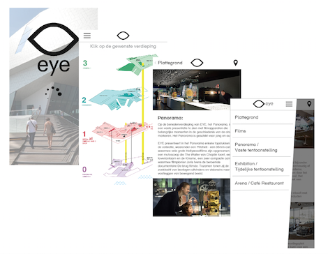

Eindproject: EYE
In de laatste vier weken werk je voor een echte klant aan een eindopdracht. Hierbij mag je los. Je mag zelf je groep samenstellen, je mag doen waar je goed in bent, de technieken die je nutteloos vond laten zitten en alles inrichten zoals je zelf wilt. Je werkt in een groep van 5. Samen leveren jullie een prototype op, een poster, een eindverslag en je doet bij de klant een presentatie.
Gekozen project: EYE
Ontwerpvraag: hoe kan de routing en het aanbod van EYE voor het publiek verhelderd worden?
Team 1: Joris van Andel, Kevin van der Gugten, Thijs Hoppenbrouwers, Egbert van der Kleij, Zahra Saied.
Onze oplossing
Met de brochure in ons achterhoofd zijn wij gaan nadenken hoe wij met behulp van een mobiele applicatie de bezoekers zowel kunnen informeren als navigeren door het gebouw. Wij hebben ons gericht zowel op het informeren als het navigeren van de gebruikers door het gebouw van EYE. De locatie van de verschillende activiteiten moest dus centraal staan binnen ons concept. Wij hebben om deze reden gekozen de plattegrond te gebruiken uit de brochure als belangrijkste punt in ons product.

Ontdek EYE: De virtuele navigatie. (Poster)
Het vak werd afgesloten met een posterpresentatie. We hebben ons prototype met een poster gepresenteerd, en bezochten de posters van de andere groepen.

Het eindverslag
Om al het werk dat is verricht af te sluiten hebben we een kort en bondig eindverslag gemaakt van maximaal 8 pagina’s. In dit eindverslag staat ons concept uitgebreid beschreven en is ook het hele proces van het onderzoek terug te vinden.
